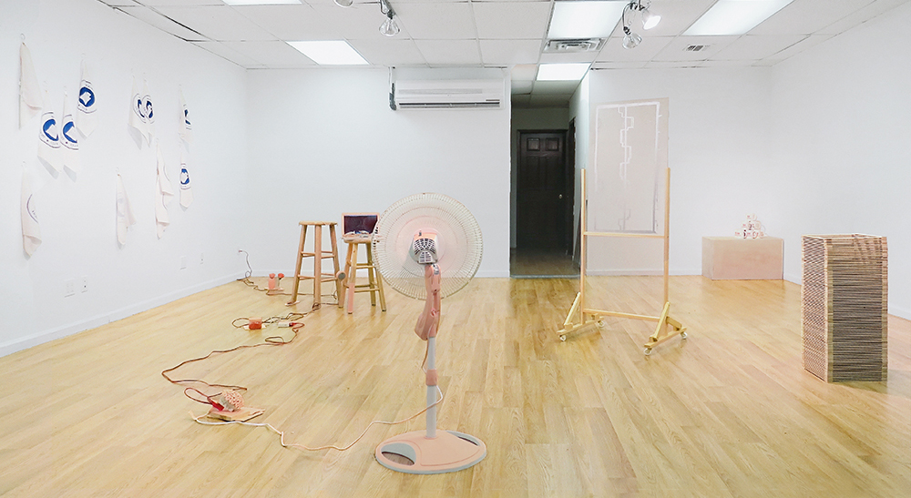
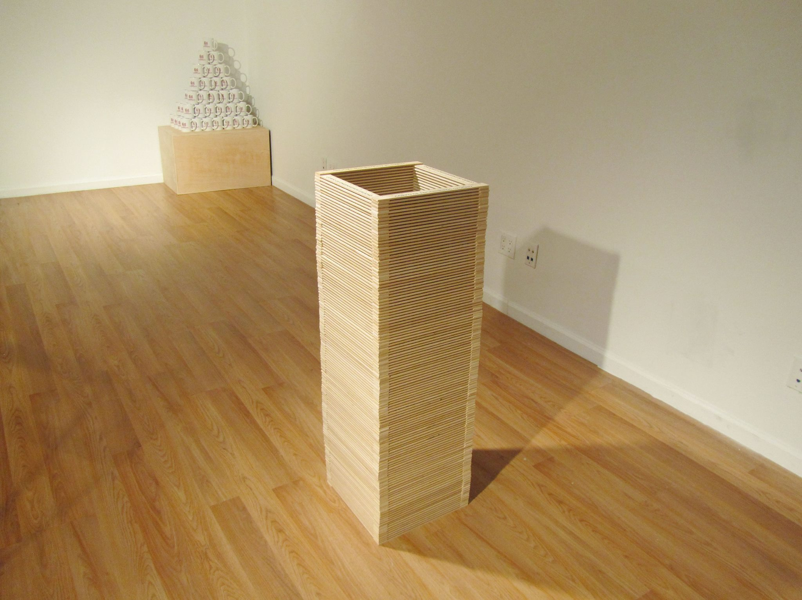

about
Cura(Epistemic Two-Step)
A collective endeavor by Roomservice Gallery, Brooklyn, 2015.
This edition features all new work by Millie Kapp, Georgia Wall and Julian Armand Jimarez Howard and with an essay by Sessa Englund.
Born out of conversations between Kapp, Wall and Jimarez Howard, the exhibition and the artworks focus on their shared interest in epistemic and linguistic modes. Indeed, representing an extension of their practices as artists and curators, this exhibition becomes an inquiry into the structures of reading, and of miss-readin. With respect to their on going areas of focus, the results of this collaboration becomes a presentation of their individual practices in a collective light.

